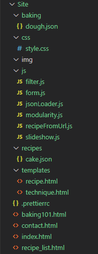

Andreas Realfsen Langnes, Inga Bertelsen, Jeeviga Gunathasan, Stian Gaustad, Tina Wedmark - 05/11/2020
Til høyre kan en se filstrukturen i prosjektet:

Nederst på siden kan vi se en tabell over filer med en kort
beskrivelse av filen, personen(e) ansvarlig for filen, og når vi
tenker å ha fullført denne filen.
{x}.JSON er navngitt etter innholdet, og er her mesteparten av
innholdet ligger. Enhver oppskrift og baketeknikk er lagret i en
JSON-fil hvor innholdet er dataen som vises for brukeren. Det kan
for eksempel være "sjokoladekake.json", hvor oppskriften da ligger i
denne filen.
| Filnavn | Beskrivelse | Ansvarlig | Deadline |
|---|---|---|---|
| index.html | HTML for hoved-nettsiden, tekst og bilder | Inga | 18.10 |
| recipe.html | HTML-mal for en enkel oppskrift, med informasjon hentet inn fra JSON-fil. | Jeeviga | 18.10 |
| recipe_list.html | HTML for oppskrifter, vist som kort med bilde og beskrivelse. | Inga | 18.10 |
| baking101.html | HTML for liste over grunnleggende baketeknikker, vist som kort med bilde og beskrivelse. | Tina | 18.10 |
| technique.html | HTML-mal for teknikker i Baking 101, med data hentet inn fra JSON-fil. | Jeeviga | 18.10 |
| contact.html | HTML med skjema for å kontakte Borghild | Stian | 18.10 |
| style.css | CSS for design av HTML-filene | Alle/Jeeviga | 25.10 |
| form.js | Script for innsending av forms (oppskrifter/meldinger) | Stian | 25.10 |
| jsonLoader.js | Script for å laste inn json-data og putte det inn i template | Andreas | 25.10 |
| modularity.js | Script for å dynamisk laste inn gjenbrukbar HTML | Stian | 25.10 |
| loadFromUrl.js | Kjører jsonLoader på en url for å hente inn riktig fil | Andreas | 25.10 |
| slideshow.js | Karusell på hovedsiden som veksler mellom bilder | Tina | 25.10 |
| {x}.json | JSON-fil med innholds-data. | Alle | 25.10 |
| filter.js | Script som filtrerer hvilke oppskrifter som lastes inn | Andreas | 25.10 |